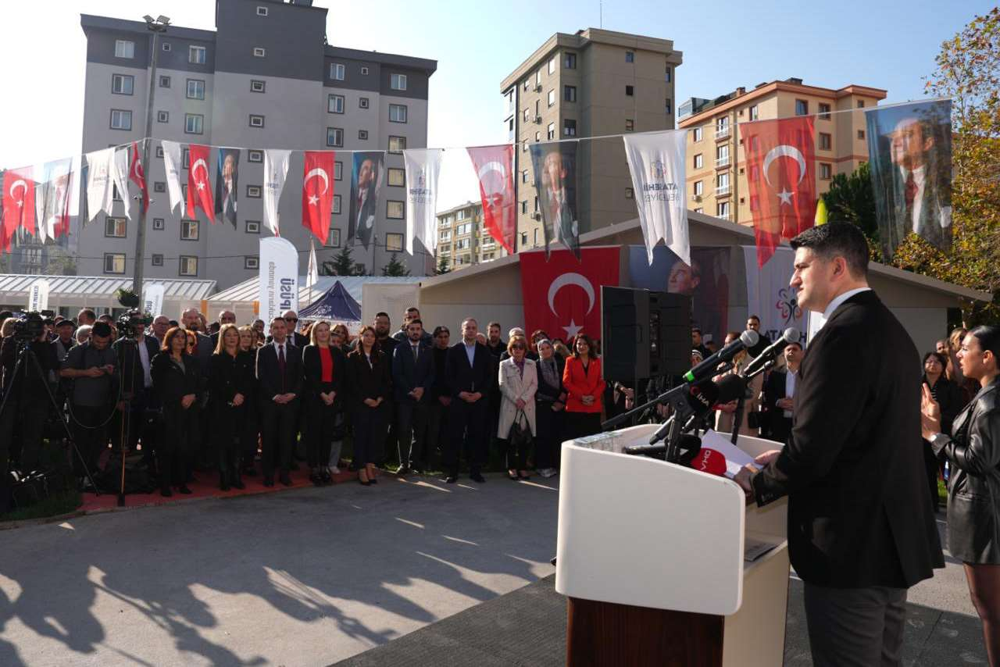
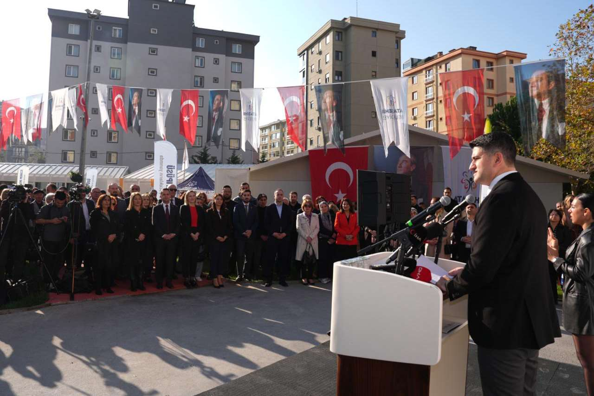


 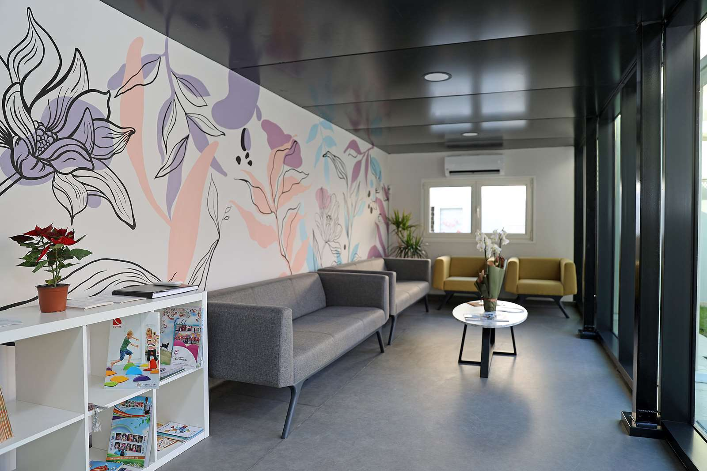
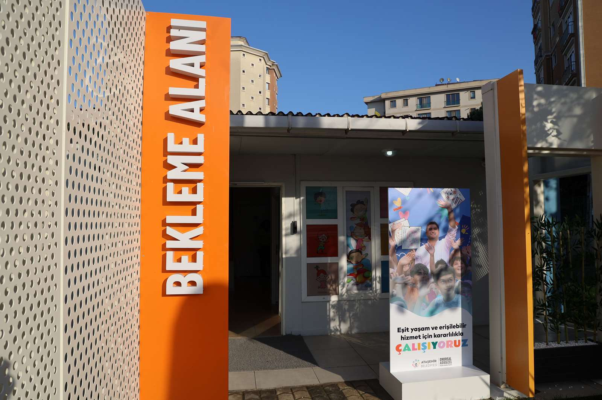
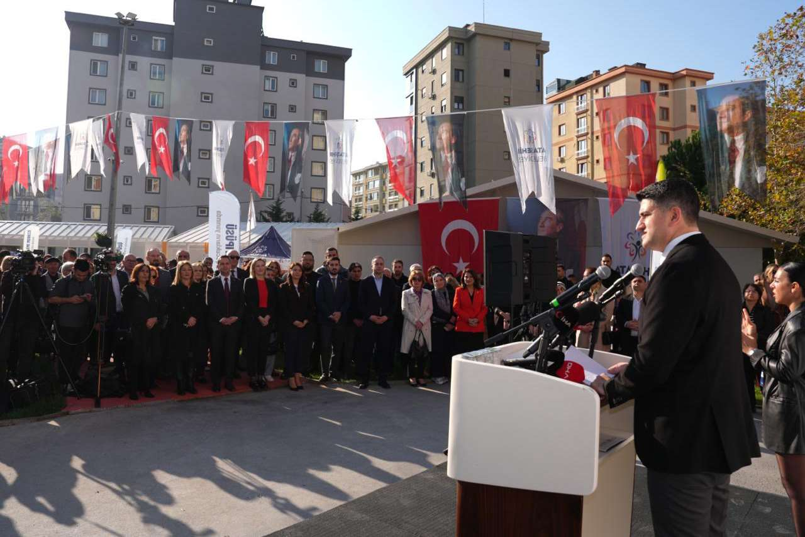
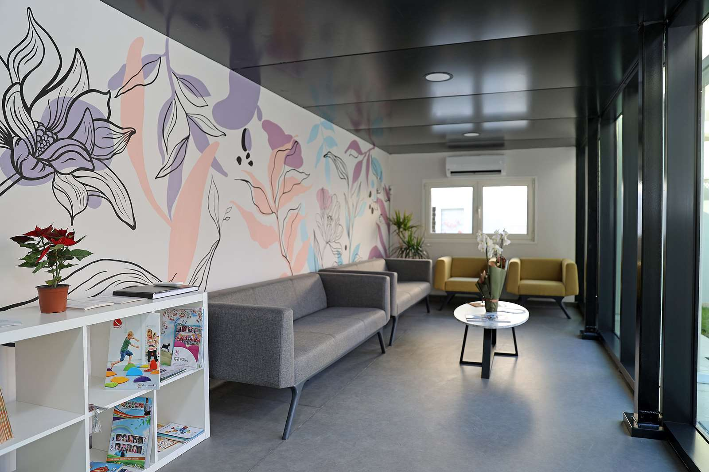
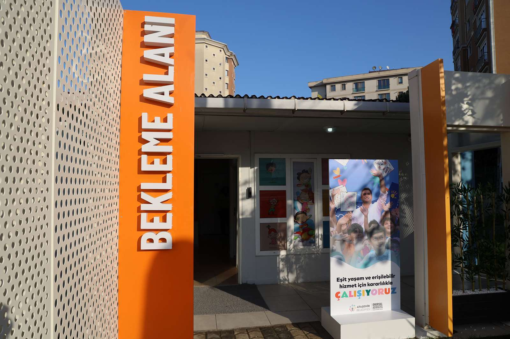
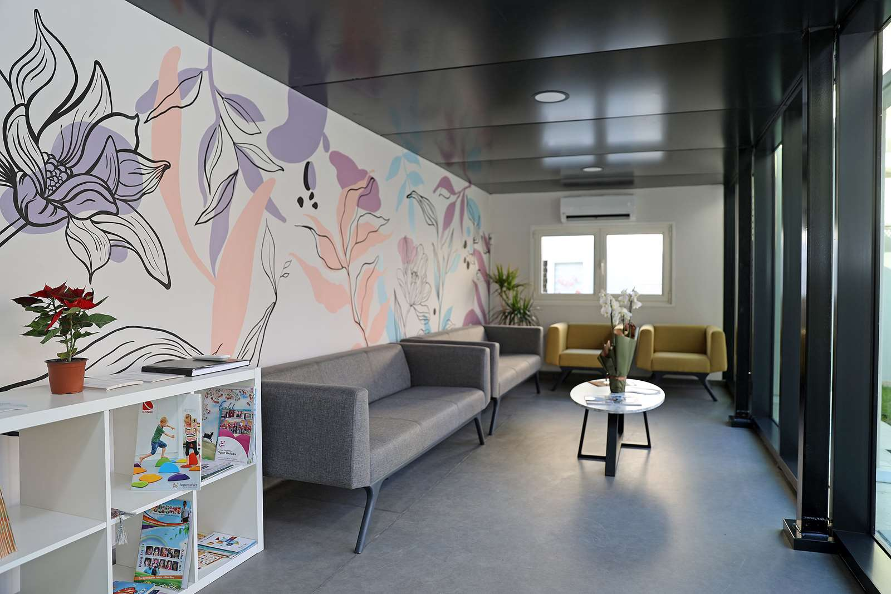
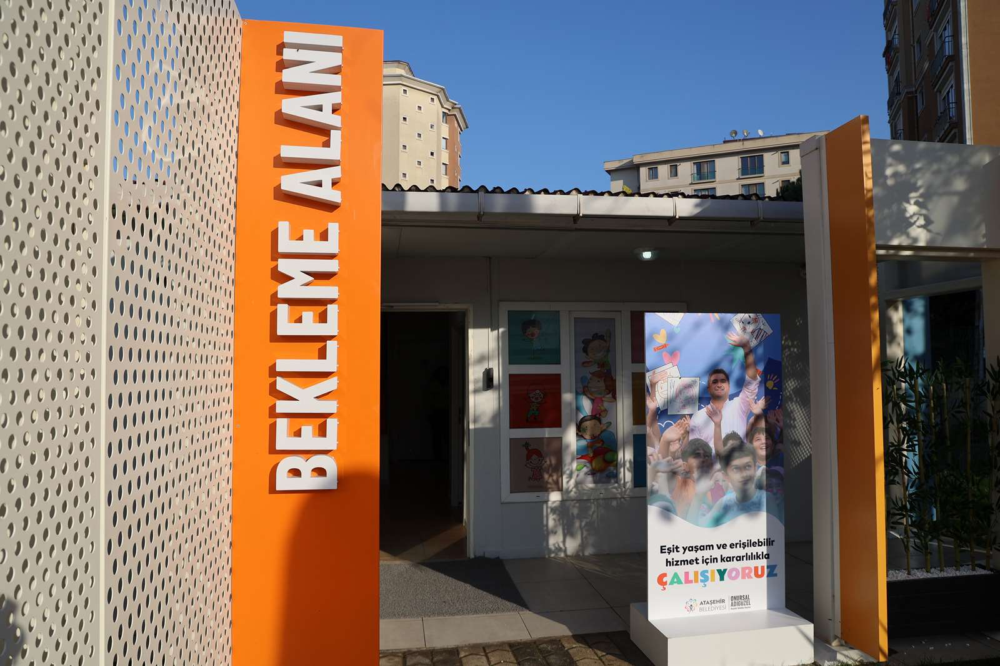
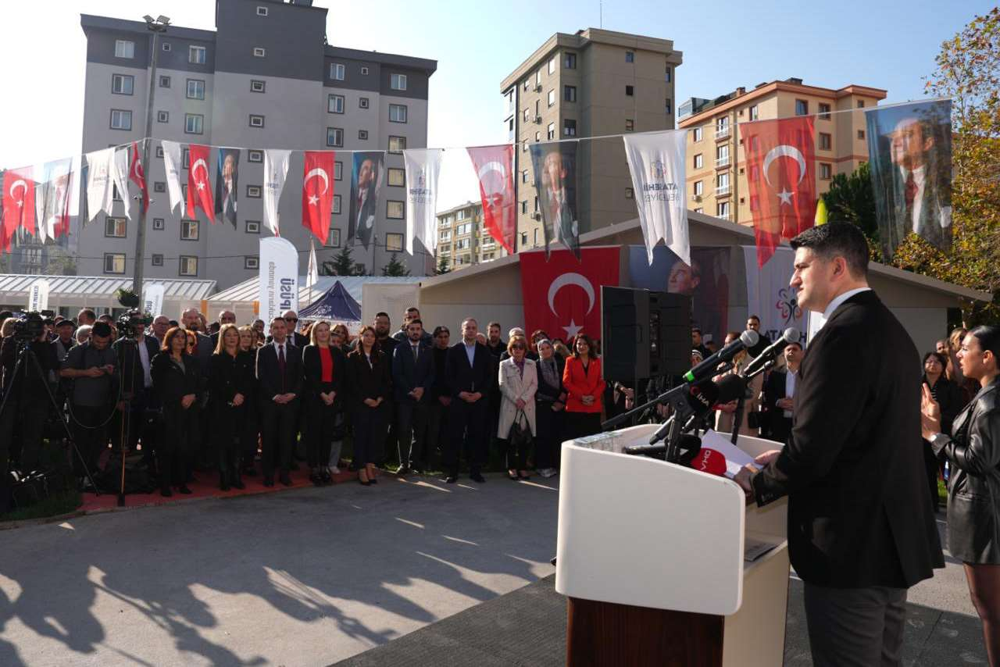
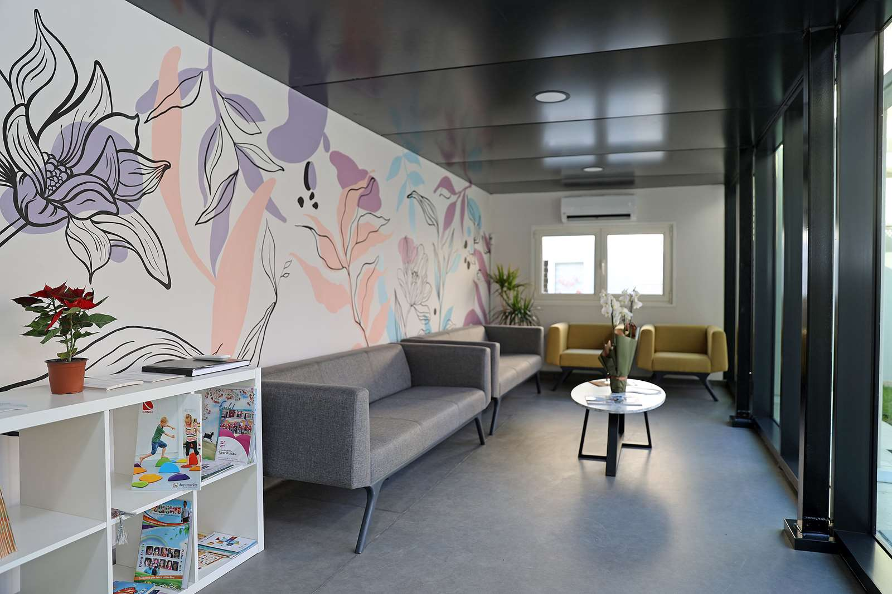
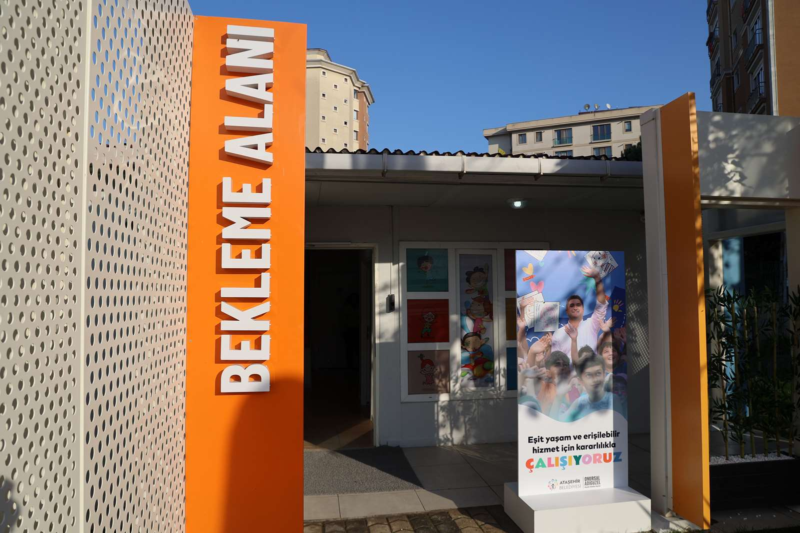
Toplumun farklı kesimlerine yönelik sosyal projeler üretmeye devam eden Ataşehir Belediyesi, engelli ve özel gereksinimli çocuklar için kurduğu ve içerisinde Duyu Bütünleme Merkezi” ile “Engelsiz Sosyal Hizmet Merkezi”nin yer aldığı Çocuk Kampüsü’nün kapılarını 3 Aralık Dünya Engelliler Günü’nde hizmete açtı.
“Çocuk Kampüsü”nün içerisinde; özel gereksinimli ve duyusal gelişimde desteğe ihtiyaç duyan çocukların daha sağlıklı, mutlu ve bağımsız bireyler olarak yetişmeleri için “Duyu Bütünleme Merkezi” ve “Engelsiz Sosyal Hizmet Merkezi” hizmet sunacak. Küçükbakkalköy Mahallesi’nde bulunan Çocuk Kampüsü’nün açılışı Ataşehir Belediye Başkanı Onursal Adıgüzel’in ev sahipliğinde yoğun bir katılımla gerçekleşti. Açılışa; Başkan Onursal Adıgüzel’in eşi Elif Duygu Adıgüzel, Cumhuriyet Halk Partisi Yüksek Disiplin Kurulu Üyesi Aysemin Gülmez, CHP İstanbul İl Başkan Yardımcısı Celal Yalçın, CHP Ataşehir İlçe Başkanı Atakan Anıl Dizdaroğlu, Atlas Rotary Kulübü Dönem Başkanı Saadet Garan ile engellilere yönelik STK’ların temsilcileri, Ataşehirli belediye meclis üyeleri, muhtarlar ve çok sayıda vatandaş katıldı.
Her çocuk aynı yeteneklere, aynı özelliklere sahip değildir. Her çocuğun öğrenme süreci bir diğerinden farklı olabilir. Bu yüzden farklılıkları olan çocukların gelişimlerini tamamlamak üzere hizmete sunulan “Duyu Bütünleme Merkezi” onların yaşamında önemli bir eğitim merkezi
olacaktır.
Bu merkezin hayata geçmesinde, bu projeye destek sağlayan Rotary Kulüplerimiz ve eğitime önem veren bağışçılarımızla bu proje gerçekleşmiştir.
Bu amaçla katkı sağlayan;
Fenerbahçe RK, Bursa RK, Ordu RK, Atlas RK,RotArt, Sn.İnan Aydınlıoğlu, Sn.Hüseyin Öktem, Sn.Nursen Özen, Sn.Ümit Kıncal Sn. Güven Topçu, Sn. Cem Öncer ve Sn. Özlem Engin dostlarımıza gönülden teşekkür ederiz.